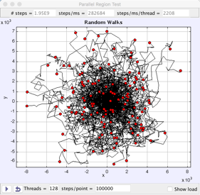

A two-dimensional random walk on a lattice with 128 particles. Each random walk is computed in a separate thread.
A Parallel Region is the simplest parallel programming Element and we use it to perform a two-dimensional random walk on a lattice. Although there are more efficient approaches, this simple example computes each random walk in a separate thread to demonstrate how computational performance depends on the number of threads and how the computational load is distributed among processor cores. In this simulation, a 2016 iMac with a quad-core Intel processor perform over 25000 random steps per millisecond.
The walk trajectories and the current positions are displayed in the plot shown above and a second window displays the computational load running on each thread. One shortcoming of this simple model is that the treads run independently so the random walks will not have the same length.
The Parallel Region implementation of the Random Walk on a lattice uses the EJS adaptation of the Parallel Java library developed by Alan Kaminsky. Addition examples demonstrating how to parallelize the random walk simulation using a parallel loop are available in the Open Source Physics Collection in ComPADRE.
The initial wave function and potential are set using the drop down menu at the bottom. Select the Custom option to edit these fields.
Harvey Gould, Jan Tobochnik, and Wolfgang Christian, An Introduction to Computer Simulation Methods, Addison-Wesley ISBN (2007). Chapter 7 introduces random walks in the context of several simple systems including random walks on a lattice.
The Parallel Java library implements the Parallel Region object used in this simulation.
Alan Kaminsky, Building Parallel Programs, Course Technology, Cengage Learning ISBN-13: 978-1423901983 (2009).
The unsynchronized Parallel Region Random Walk Model was developed by Wolfgang Christian and Francisco Esquembre using the Easy Java/JavaScript Simulations (EJS) version 5 modeling tool. It is based on a Java program from An Introduction to Computer Simulation Methods and is distributed as a ready-to-run Java program (jar file).
You can examine and modify a compiled EJS Java model if you run the model (double click on the model's jar file), right-click within a plot, and select "Open Ejs Model" from the pop-up menu. You must, of course, have EJS installed on your computer. Information about EJS is available at: <http://www.um.es/fem/Ejs/> and in the OSP ComPADRE collection <http://www.compadre.org/OSP/>.